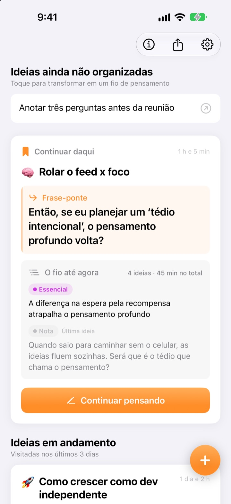
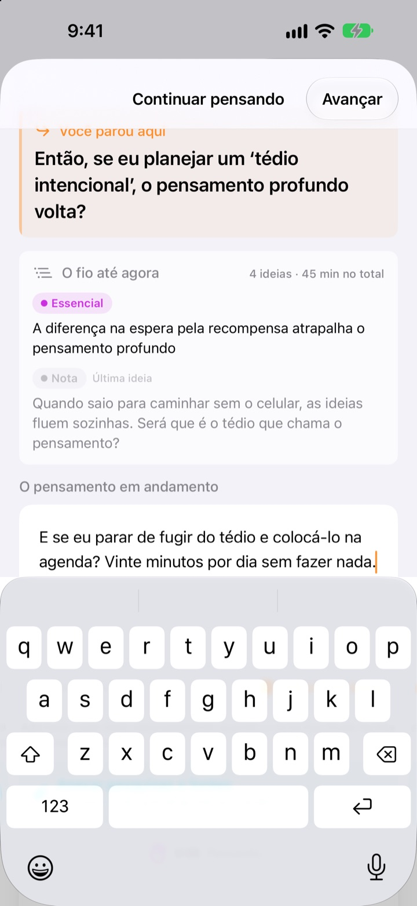
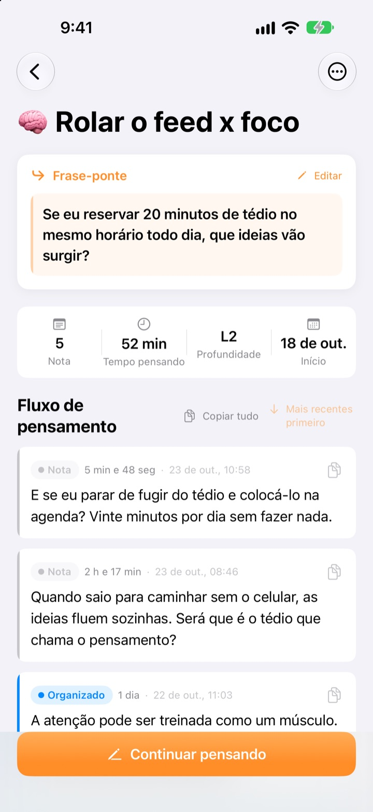
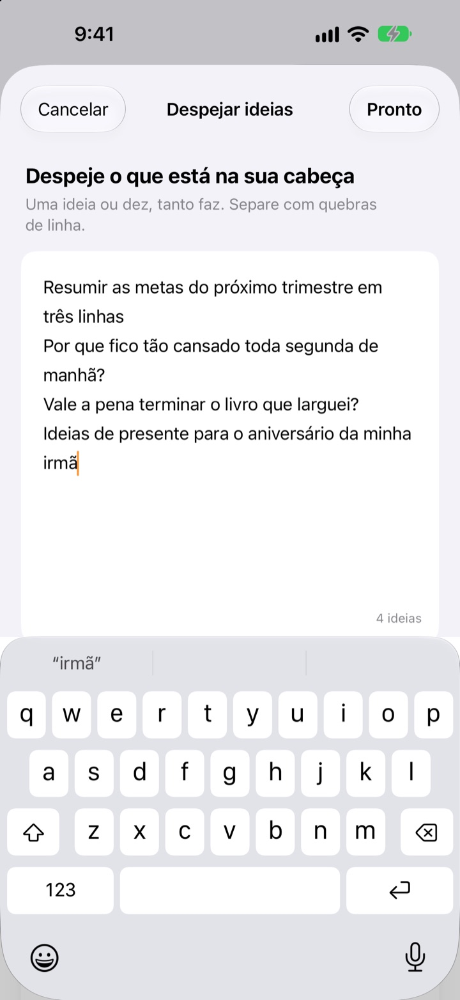

A ideia que ficou pela metade ontem,
hoje continua de onde parou
Quando parar de pensar, deixe uma linha para continuar. Na próxima vez que abrir o app, ela estará esperando lá no topo.
Todos os recursos são gratuitos. Sem conta: tudo fica no seu dispositivo.

Deixe sua frase-ponte
Escreva uma ideia e deixe a frase de onde vai continuar da próxima vez. Funciona na mesma ordem do app.
Onde é que eu tinha parado mesmo?
Você reabre uma anotação de dias atrás e encontra só algumas conclusões, não a pergunta que pretendia explorar em seguida. Aí começa tudo do zero. O ThinkFlow faz você deixar essa próxima pergunta ao parar, para começar por ela assim que voltar.
Sua frase-ponte espera no topo
Termine a sessão com uma única linha: a pergunta para continuar. Quando voltar, essa frase, o essencial até agora e a última ideia ficam em um só cartão. Nada para reconstruir.
Ela aparece também num widget da Tela de Início e, enquanto você pensa, o tempo corre na Tela de Bloqueio e na Dynamic Island.

Da nota ao essencial
Leve cada ideia por quatro níveis: nota, organizado, essencial e resumo. Veja num relance o quanto ela amadureceu.
O que você pesquisou ou perguntou entra como referência, separado das suas próprias ideias.

Primeiro, esvazie a cabeça
Escreva tudo que está na sua cabeça, uma linha por ideia, e escolha a que quer trabalhar agora: ela vira um fio. O resto espera na tela inicial até você tocar.
Ideias que você não toca há mais de três dias vão para Ideias para retomar.

Comece em três passos
- 1
Despeje suas ideias
Uma por linha; depois escolha a que vale desenvolver.
- 2
Continue pensando
Adicione cada ideia nova separada para refinar com facilidade depois.
- 3
Deixe a frase e feche
Na próxima vez, você começa dali.
Nível de refinamento
- Nota
- Ideia bruta
- Organizado
- Organizada uma vez
- Essencial
- Só o essencial
- Resumo
- Resumo final
Toque na etiqueta de nível ao lado de uma ideia para mudar. O essencial e os resumos aparecem primeiro no cartão quando você volta.
Sua frase-ponte espera no topo
Preciso mesmo escrever a frase-ponte?
Se você adicionou algo, sim: a tela Continuar pensando só fecha depois que você deixa a próxima linha. Se não escreveu nada, é só fechar. O segredo é parar quando ainda tem o que dizer, não quando trava.
O que são as Ideias para retomar?
Os fios que você não abre há mais de três dias ficam reunidos à parte na tela inicial, para que uma ideia quase esquecida volte a partir da frase-ponte.
Como relato um bug ou sugiro algo?
Use Enviar feedback nos ajustes do app, escreva para o endereço abaixo ou abra uma issue em github.com/M1zz/ThinkFlow/issues. Toda mensagem é bem-vinda.
É tudo grátis mesmo?
Sim. Todos os recursos são gratuitos, sem anúncios e sem conta. “Apoie o desenvolvedor” nos ajustes é totalmente opcional e não libera nada a mais.
Dúvidas ou sugestões? Escreva para leeo@kakao.com.